PREPARACIÓN FÍSICA APLICADA AL FÚTBOL
Fuerza, pliometría y ritmo de juego
Planificación semanal enfocada en ganar fuerza en gimnasio y transferirla a la aceleración, el regate y el cambio de ritmo en cancha.
Ver rutina completaESTRUCTURA SEMANAL
Cómo se divide el entrenamiento
El programa organiza la carga en tres bloques principales para mejorar la potencia física sin llegar con fatiga muscular al partido del fin de semana.
Tren Superior
Trabajo de fuerza en pecho, espalda y hombros para proteger el balón, ganar duelos cuerpo a cuerpo y mantener una postura firme.
Tren Inferior
Ejercicios compuestos e isquiotibiales orientados a la potencia de disparo, estabilidad de rodilla y prevención de lesiones.
Pliometría y Cancha
Saltos reactivos, salidas cortas y cambios de dirección para ganar explosividad en los primeros metros como volante ofensivo o extremo.
PLAN DE 16 EJERCICIOS
Cuatro ejercicios clave por cada bloque de la semana.
1. Tren Superior
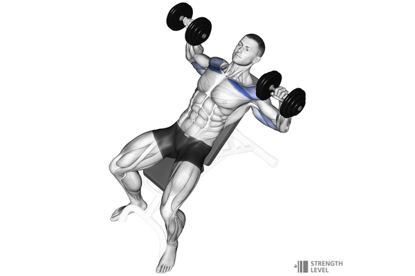
Press Inclinado
4 series x 8 reps con mancuernas para fuerza de empuje.
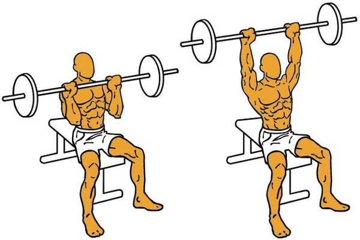
Press de Hombros
4 series x 10 reps controladas para fuerza de deltoides.
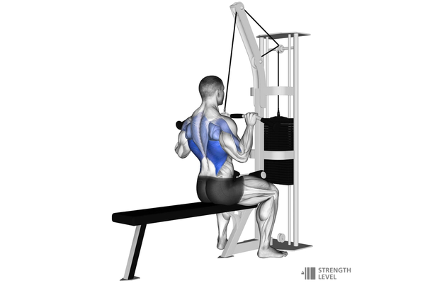
Jalón al Pecho
4 series x 10 reps enfocadas en amplitud y tracción dorsal.
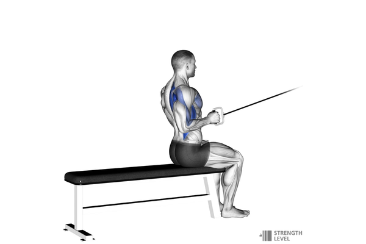
Remo Unilateral
3 series x 12 reps por brazo para densidad de espalda.
2. Tren Inferior
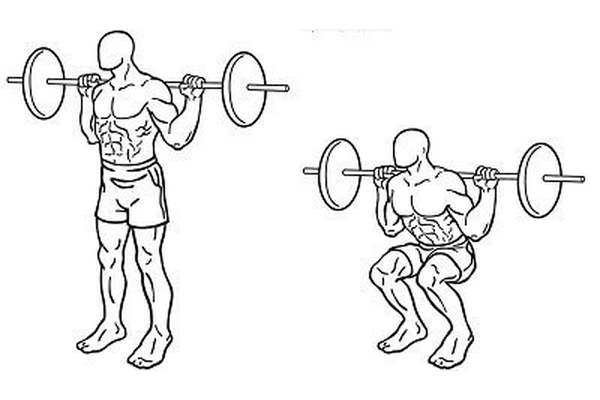
Sentadilla Base
4 series x 8 reps priorizando técnica y profundidad.
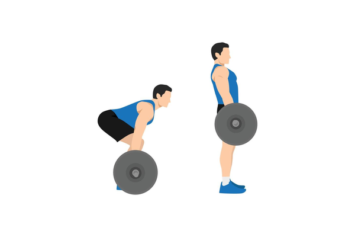
Peso Muerto Rumano
4 series x 10 reps para fortalecer isquiotibiales y glúteo.
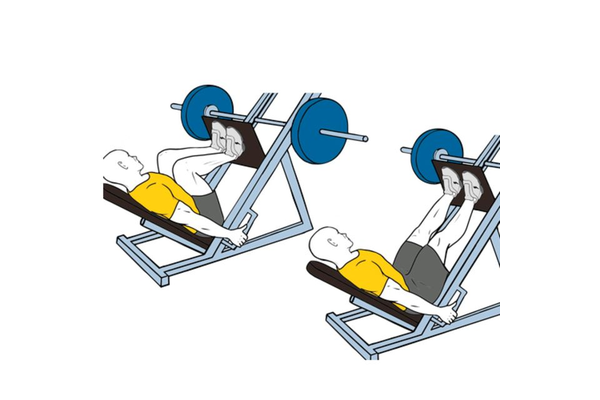
Prensa de Piernas
3 series x 12 reps de empuje pesado sin carga lumbar.
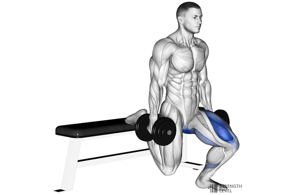
Sentadilla Búlgara
3 series x 10 reps por pierna para fuerza y estabilidad.
3. Pliometría
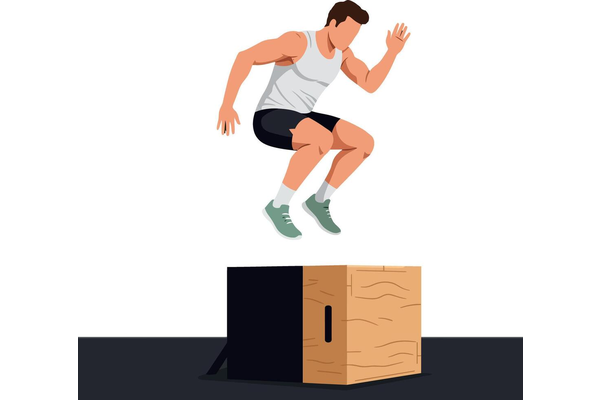
Box Jumps
4 series x 5 saltos explosivos al cajón con caída suave.
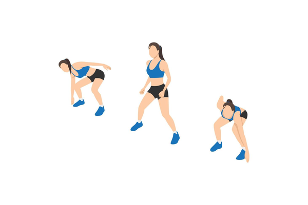
Saltos Laterales
3 series x 8 saltos por lado para potencia en el apoyo.
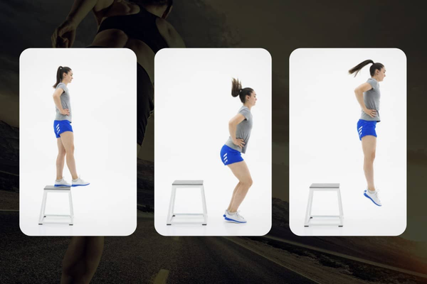
Drop Jumps
4 series x 4 repeticiones buscando despegar rápido del suelo.
Salto Horizontal
4 series x 5 saltos largos para mejorar la zancada inicial.
4. Velocidad y técnica
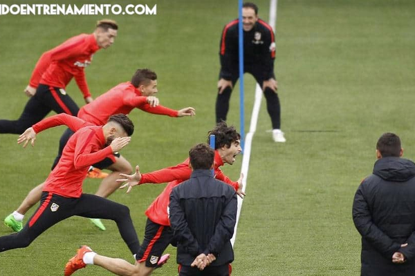
Sprints de 15m
6 salidas a máxima velocidad con descanso completo.
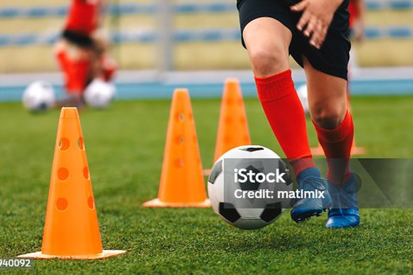
Freno y Arranque
4 pasadas de desaceleración brusca y cambio de dirección.
Agilidad en Zigzag
4 repeticiones de desplazamiento rápido entre conos.
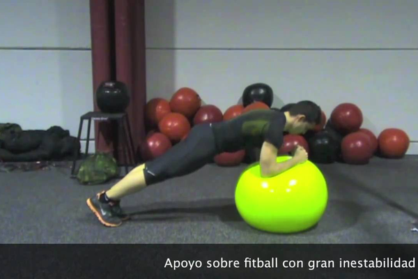
Core Isométrico
3 series de 45 segundos para proteger la zona lumbar.